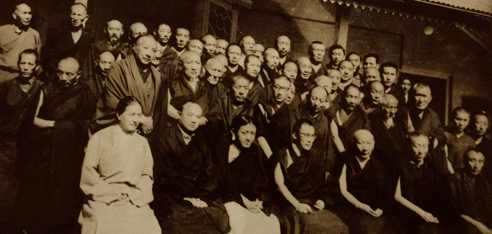
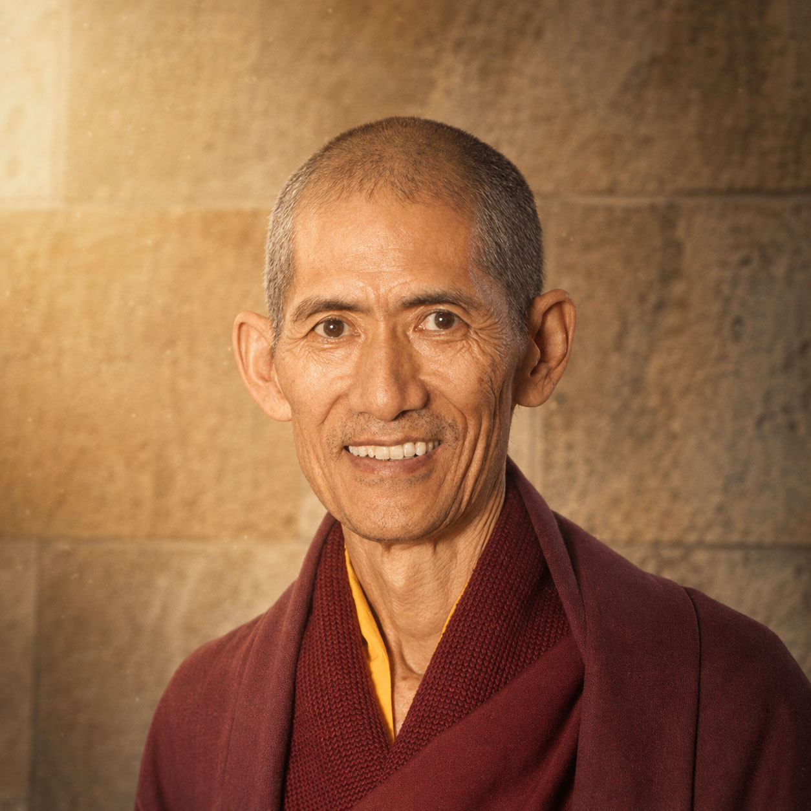
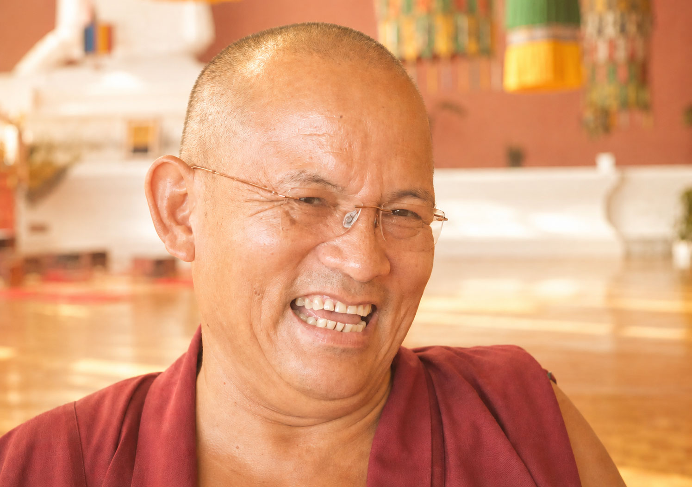

Sobre · Maestros
La línea que no se rompe
Lo que aquí se enseña no empieza en Alicante. Llega, maestro tras maestro, desde una tradición del siglo XI que nunca se ha interrumpido. Estos son quienes la sostienen —y quienes la transmiten.
El Linaje Sakya
Una de las cuatro grandes tradiciones
El linaje Sakya nació en el Tíbet del siglo XI, en el seno de la familia Khön. Su cabeza —el Sakya Trizin— se transmite dentro de esa misma línea, y hoy la sostienen tres generaciones vivas. No es historia lejana: es una autoridad que sigue en pie.

昆 origen-linaje.jpgLa autoridad de un maestro no se declara: se recibe.— La transmisión Sakya · texto provisional
Maestros del linaje
Una familia y una sucesión
El trono Sakya pasa de una generación a la siguiente dentro de la familia Khön. Padre, dos hijos y hermana: la línea completa, viva hoy.
Enseñan con nosotros
Maestros visitantes

PWKhenpo Pema Wangdak
Guía a estudiantes occidentales desde hace más de treinta años y es fundador de numerosos proyectos humanitarios y espirituales. Continúa viajando y extendiendo el Dharma por centros de todo el mundo.

JTKhenpo Jamyang Tenzin
Uno de los maestros de filosofía más respetados del Linaje Sakya, tanto por su vasta erudición como por su experiencia en retiro.
 RG
khenpo
RG
khenpo
El cruce a Alicante · khenpo residente
Lama Khenpo Rinchen Gyaltsen
Designado por S. S. Gongma Trichen director de la Fundación Sakya y khenpo del Centro Budista Sakya. Su misión es transmitir con claridad y pragmatismo las enseñanzas del Buddha en lengua hispana. Aquí es donde el linaje se hace enseñanza cotidiana.
Conoce a Khenpo RinchenLos maestros no enseñan solos. Una comunidad monástica sostiene, día a día, la práctica.
Una enseñanza que se recibe practicando
Si esta línea te inspira confianza, el paso siguiente no es un compromiso: es empezar a explorar.
Explorar los cursos